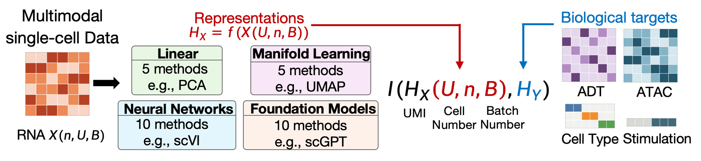
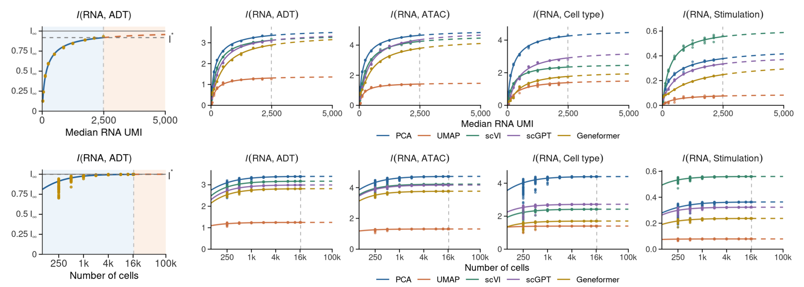
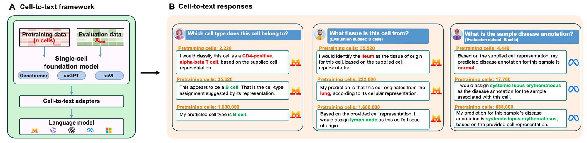
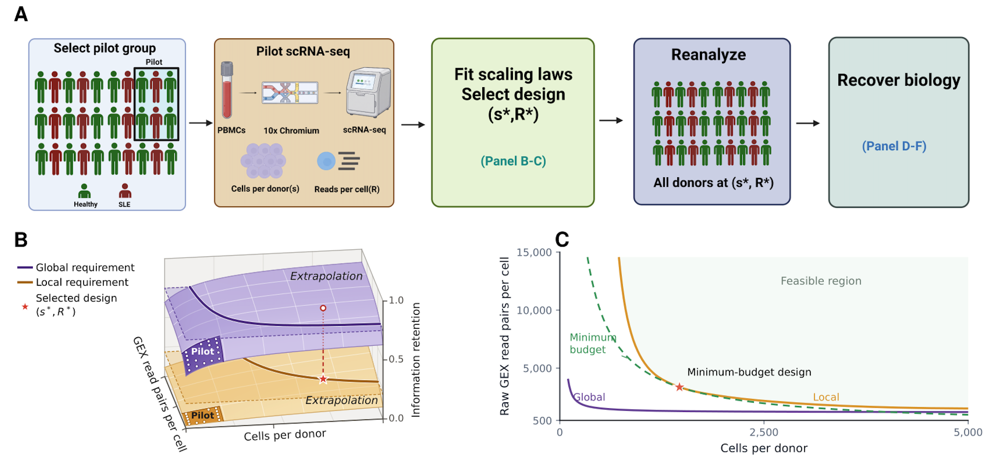

Scaling Laws in Single-Cell Representation Learning
Summary
The question
Single-cell technologies generate diverse molecular profiles across cell types, biological conditions, and perturbations, yet how much biological information is gained by collecting more data remains difficult to predict. Across diverse single-cell data representations that summarize variation among cells or genes, we observe systematic scaling of biological information recovery with cell number and molecular depth, but the rigorous theoretical foundations remain elusive.

A theory of single-cell scaling
We introduce a unified framework based on Random Matrix Theory that derives a broad class of single-cell scaling laws and characterizes how factors such as signal strength, noise, molecular depth, sample size, and batch effects determine recovery thresholds and information ceilings.

Scaling in AI pretraining
We further extend this framework to representation learning and AI pretraining, showing how training-data scale and test-data quality jointly shape information recovery, including in models that translate cellular measurements into text.

From scaling laws to experimental design
Finally, to translate these predictions into data-collection strategies, we use scaling laws fitted to pilot data to guide experimental design, identifying cell-number and sequencing-depth combinations that meet specified information requirements or maximize information under a fixed budget. Applied to systemic lupus erythematosus data, this approach guides experimental design for recovering disease-associated signals. We further apply this design strategy to perturbation screens, guiding the collection of informative training data for virtual-cell models.

Together, these results provide a quantitative basis for predicting the biological information gained from additional experimental, sequencing, and pretraining resources.
Paper
Random Matrix Scaling Laws in Single-Cell Representation Learning. S. Zhu, J. Hu, G. Gowri, A. M. Klein, R. Ma. Manuscript under review.